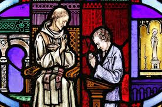

Sacrament of Reconciliation
What is it ?
-The Sacrement of Reconcilitation is a method where individuals can be forgived and free of their sins.
-This Sacrement usally takes place inside a reconcilliation room.

How Did Jesus Model This ?
-Jesus taught about the importance of forgiveness. In Matthew 6:14-15, He emphasized that forgiveness from God is linked to our forgiveness of others.
-This principle is foundational to the sacrament.
-Scripture Passages
-The Parable of the Prodigal Son (Luke 15:11-32):
-This parable illustrates God's willingness to forgive and welcome back those who repent. The father’s unconditional love and forgiveness towards his wayward son model the divine mercy and reconciliation that the sacrament represents.
-The Parable of the Lost Sheep (Luke 15:3-7):
-This story shows the joy in heaven over one sinner who repents, emphasizing the value of each person and the importance of seeking reconciliation.
The Four Parts
-Confession
-The act of expressing sorrow and remorse for one's sins.be used in a liturgical environment or in solitude.
-Act of absoloution
-A Catholic prayer the expresses sorrow for their sins.
-Absoloution
-The remission of sin and the punishment due to sin, granted by the Church.
-Penace
-Penance is any act or a set of actions done out of repentance for sins committed.